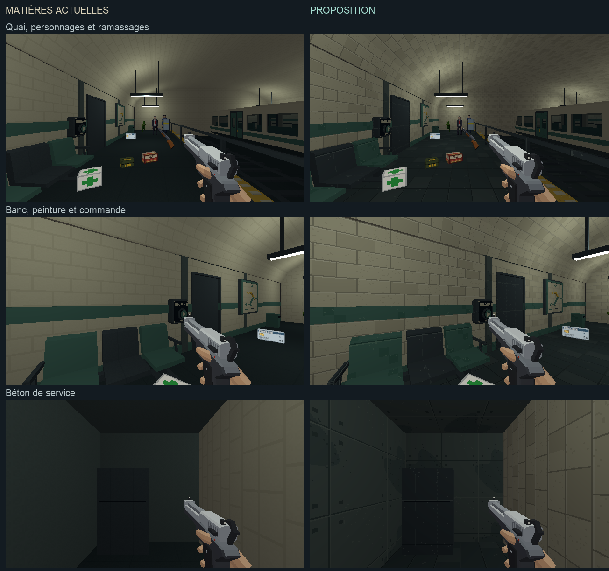

PROJET CASSANDRE · HARMONISATION · ÉTAPE 1
Une référence commune, sur le quai.
La même scène, les mêmes lampes, les mêmes personnages et objets. Compare les matières actuelles à la proposition : carrelage nuancé, sol plus lisible, peinture et acier travaillés, béton de service.
Traitement approuvé le 10 octobre 2026. Voir son application aux galeries du métro.
Chargement de la scène étalon…
Clique dans le jeu pour te déplacer. Les ennemis restent neutralisés pour l’observation. La commande ouvre réellement le local de service. Les armes, mains, sprites, cartes et boîtes utilisent leurs ressources actuelles ; cette première proposition porte sur les matières du décor.
Pose et état de la comparaison
En attente…
Comparaison à cadrage identique
Matières actuelles à gauche, proposition à droite. Les armes, personnages et ramassages gardent leurs ressources actuelles.
